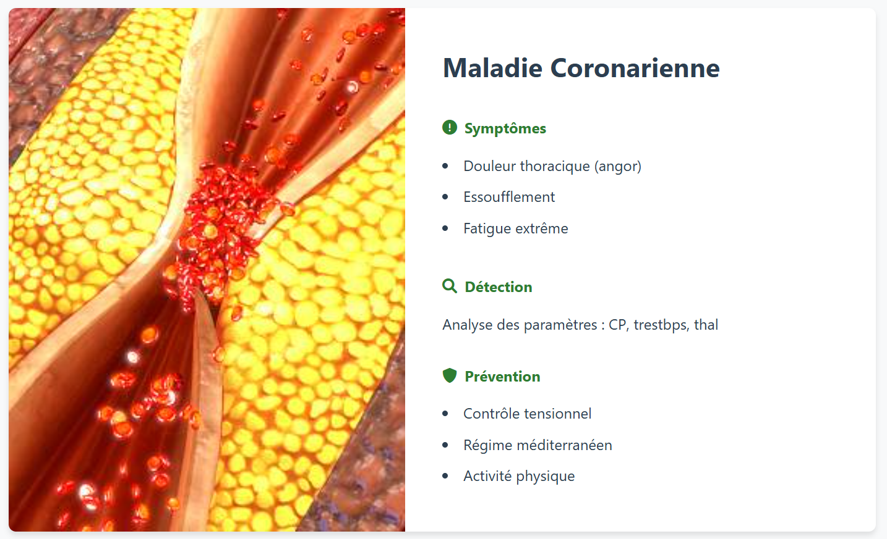

Objectif
L'application a pour but de prédire le risque de maladie cardiaque chez un patient en se basant sur des données cliniques et physiologiques. Elle utilise un modèle d'apprentissage automatique (Random Forest) pour analyser 13 caractéristiques médicales et déterminer si le patient présente ou non des signes de pathologie cardiaque.
Spécifications Techniques
- Modèle de Machine Learning
- Algorithme: Random Forest Classifier
- Nombre d'arbres: 100 (n_estimators=100)
- Random State: 42 (pour la reproductibilité)
- Précision: Non spécifiée dans le code (nécessiterait une évaluation)
- Pré-traitement des Données
- Normalisation: StandardScaler (moyenne=0, écart-type=1)
- Gestion des valeurs manquantes: Suppression des lignes avec valeurs manquantes
- Binarisation de la cible:
- 0 = absence de maladie cardiaque
- 1 = présence de maladie cardiaque
- Données d'Entrée
- age - Âge en années
- sex - Sexe (1 = homme, 0 = femme)
- cp - Type de douleur thoracique
- trestbps - Pression artérielle au repos
- chol - Cholestérol sérique en mg/dl
- fbs - Glycémie à jeun > 120 mg/dl (1 = vrai, 0 = faux)
- restecg - Résultats électrocardiographiques au repos
- thalach - Fréquence cardiaque maximale atteinte
- exang - Angine induite par l'exercice (1 = oui, 0 = non)
- oldpeak - Dépression ST induite par l'exercice
- slope - Pente du segment ST de pointe
- ca - Nombre de vaisseaux principaux colorés
- thal - Thalassémie
- Infrastructure
- Langage: Python
- Bibliothèques principales:
- scikit-learn (pour le modèle ML)
- pandas (pour le traitement des données)
- joblib (pour la sauvegarde du modèle)
Performance
- Temps d'entraînement: Non mesuré dans le code
- Mémoire requise: Dépend de la taille des données
Limitations
- Nécessite des données complètes (pas de gestion avancée des valeurs manquantes)
- Modèle non évalué (aucune métrique de performance calculée)
- Pas de validation croisée implémentée
Évolutivité
- Le modèle peut être mis à jour avec de nouvelles données
- Possibilité d'ajouter d'autres algorithmes pour comparaison
1. Page d'accueil
2. Page d'accueil

3. Pathologies Détectées
4. Inscrire/Connect

5. Variables Médicales